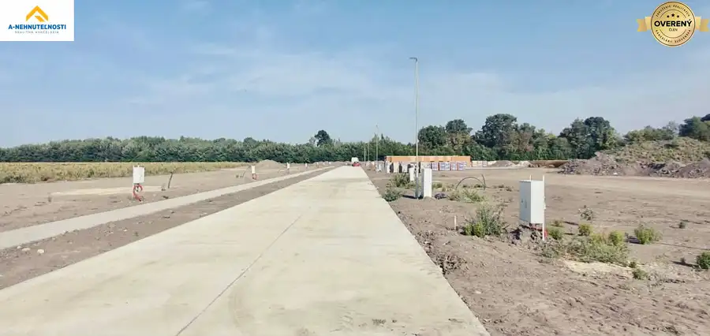
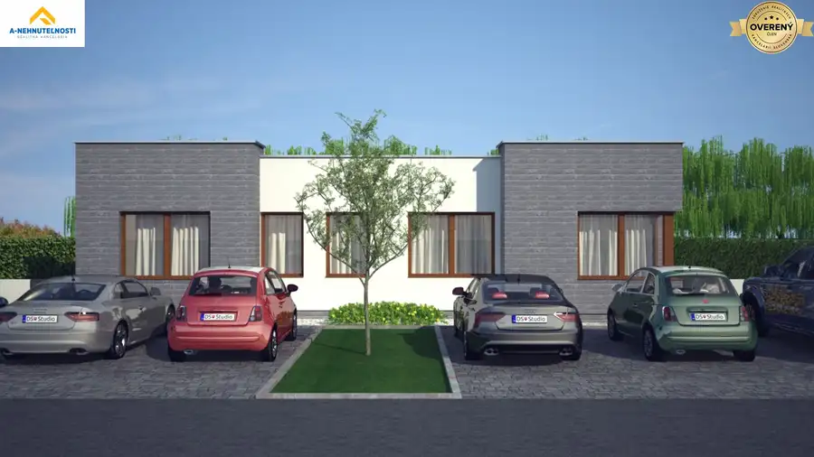

NOVINKA V PONUKE | Moderný 4-izbový rodinný dom v obci Michal na Ostro
Michal na Ostrove
- Dispozícia4-izbový
- Plocha140 m²
- Poschodie0. z 1
O nehnuteľnosti
Hľadáte moderné bývanie, ktoré spája pokoj vidieka s výbornou dostupnosťou do Bratislavy? Predstavujeme Vám jedinečný samostatne stojaci 4-izbový rodinný dom v obľúbenej lokalite Michal na Ostrove – Kolónia, kde vzniká nová rezidenčná štvrť určená pre komfortné rodinné bývanie.
Výstavba domu začína v auguste 2026 a predpokladané dokončenie je plánované ku koncu roka 2026. Veľkou výhodou je možnosť ovplyvniť technické riešenia domu ešte počas výstavby.
Základné informácie
samostatne stojaci 4-izbový rodinný dom
pozemok približne 500 m²
úžitková plocha 140 m²
moderná plochá strecha
predaj v stave HOLODOM
možnosť dokončenia do štandardu podľa individuálnej dohody
Technické prevedenie
Dom je navrhnutý s dôrazom na kvalitné materiály, energetickú úspornosť a moderné technológie.
murovaná stavba z tehly Porotherm 30 cm
zateplenie 20 cm polystyrén
plochá montovaná strešná konštrukcia
plastové biele okná s izolačným trojsklom
plastové biele vstupné dvere
kvalitné sádrové vnútorné omietky
predpríprava na alarm
predpríprava na videovrátnik
predpríprava na klimatizáciu
predpríprava na vonkajšie elektrické žalúzie
Kúrenie podľa Vašich predstáv
Ak si nehnuteľnosť zarezervujete počas výstavby, budete mať možnosť vybrať si spôsob vykurovania:
tepelné čerpadlo s podlahovým vykurovaním alebo
elektrické podlahové vykurovanie.
Takéto riešenie Vám umožní prispôsobiť dom vlastným požiadavkám aj plánovanému rozpočtu.
Inžinierske siete
elektrická prípojka
vlastná studňa
žumpa
predpríprava na budúce napojenie na verejnú kanalizáciu
Stav HOLODOM zahŕňa
Dom bude odovzdaný v stave holodom pripravenom na dokončenie podľa Vašich predstáv. Zároveň ponúkame možnosť dokončenia do štandardu za výhodný príplatok podľa individuálnej dohody. Budúci majiteľ si tak môže zvoliť materiály, farebné prevedenie aj celkový štýl interiéru.
Lokalita, ktorú si zamilujete
Michal na Ostrove – Kolónia patrí medzi dynamicky sa rozvíjajúce lokality v okrese Dunajská Streda. Ponúka pokojné bývanie v príjemnom prostredí s množstvom zelene a zároveň výbornú dostupnosť do Bratislavy.
Veľkým benefitom je rýchle napojenie na rýchlostnú cestu R7, vďaka čomu sa do Bratislavy dostanete približne za 20 až 25 minút autom. Lokalita je atraktívna aj pre ľudí dochádzajúcich za prácou, pričom alternatívou je aj vlakové spojenie z blízkeho okolia.
V blízkosti sa nachádza kompletná občianska vybavenosť:
materská a základná škola
potraviny a základné služby
autobusová zastávka
zdravotné služby
reštaurácie a občerstvenie
Dunajská Streda vzdialená len niekoľko minút jazdy autom
Šamorín a Bratislava s výbornou dostupnosťou cez R7.
Prečo práve tento dom?
moderná architektúra s plochou strechou
priestranných 140 m² úžitkovej plochy
samostatne stojaci rodinný dom
kvalitné stavebné materiály
možnosť výberu spôsobu vykurovania
možnosť dokončenia podľa vlastných predstáv
pokojná lokalita s výbornou dostupnosťou do Bratislavy
Ak hľadáte novostavbu, ktorú si môžete prispôsobiť svojim predstavám už počas výstavby, táto ponuka je ideálnou voľbou pre Vás.
Neváhajte nás kontaktovať ešte dnes na tel.č. alebo . Radi Vám predstavíme projekt osobne a pomôžeme Vám splniť sen o novom bývaní.
Inzerát obsahuje vizualizácie a fotky sú majetkom realitnej kancelárie.
Parametre
| Rozloha pozemku | 500 m² |
|---|---|
| Zastavaná plocha | 168 m² |
| Úžitková plocha | 140 m² |
| Poschodie | prízemie |
| Počet poschodí | 1 |
| Počet izieb | 4 |
| Voda | studňa |
| El. napätie | 230V |
| Plyn | nie |
| Kanalizácia | žumpa |
| Kúpeľňa | vaňa a sprchovací kút |
| Vykurovanie | vlastné - elektrické |
| Terasa | áno |
| Pivnica | nie |
| Parkovanie | vlastné vyhradené |
| Postavené z | Porotherm |
| Zateplený objekt | áno |
| Klimatizácia | predpríprava |
| Bezbariérový prístup | nie |
| Okná | plastové |
| Terén | rovina |
| Prístupová cesta | betónová cesta |
| Pripravené na výstavbu | vydané stavebné povolenie |
| Novostavba | áno |
| Dátum zverejnenia | 21. 9. 2026 |
Kde to je
Mohlo by Vás zaujímať

Rodinné domy3 199 900 €Veľký záujem – 4-izbové novostavby so záhradou už od 199 900 € Michal na Ostrove 4-izbový103.91 m² Realitná kancelária A-Nehnuteľnosti ponúka na predaj moderné 4-izbové bytové jednotky v rodinných domoch s dvoma bytovými jednotkami v obci Michal na…
Rodinné domy10 214 990 €Novinka v ponuke! 4-izbové bývanie so záhradou | plochá Strecha | Michal na Ostrove 4-izbový122.45 m² Realitná kancelária A-Nehnuteľnosti ponúka na predaj moderné 4-izbové bytové jednotky v rodinnom dome s dvoma bytovými jednotkami v obci Michal na…